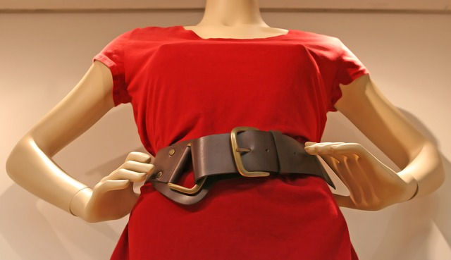

Przerabianie starych ubrań
Masz pełną szafę ubrań, ale wciąż masz wrażenie, że nic do siebie nie pasuje? wszystkie ubrania są stare i niemodne? za duże? za małe? a może najzwyczajniej zbyt.. zwyczajne! To sygnał, aby w dłoń chwycić parę nożyczek, igłę, nitkę, może farby czy guziki.
Tnij, rwij, zszywaj, przyszywaj, maluj - to Twoja inwencja twórcza i Twój własny sposób na trendy. Zostań projektantem swojej, unikatowej i niepowtarzalnej mody już dziś!
Jeśli brak Ci inspiracji, koniecznie zajrzyj na Pinteresta, Instagrama, TikToka lub YouTube’a. Wystarczy w wyszukiwarce lub hashtagach wpisać “przerabianie ubrań”, “DIY” czy “moda”. W internecie jest peeeełno pomysłowych i twórczych osób, które dzielą się swoim hobby!
